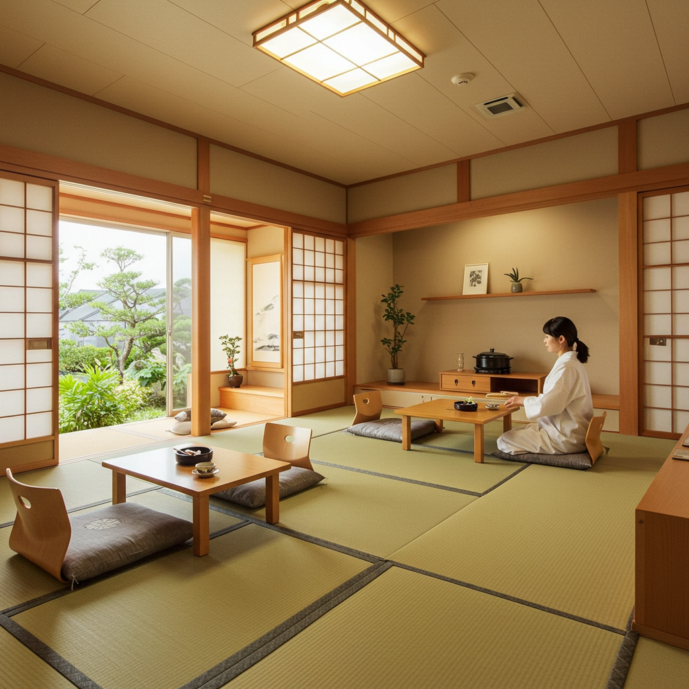

「本当の自分」と出会う旅へ：心を整え、軽やかに生きるためのヒント

はじめに：なぜ今、心を整えることが大切なのか？
毎日、本当にお疲れ様です。朝、目覚まし時計の音で現実世界に引き戻され、慌ただしく支度を整え、満員電車に揺られて職場へ。日中は鳴り止まない通知音、次々と舞い込むタスク、複雑な人間関係に気を配りながら、気づけばあっという間に夜。家に帰っても、スマートフォンに流れてくる膨大な情報や、誰かのきらびやかな日常を眺めているうちに、心休まる時間もなく一日が終わっていく…。
もし、あなたが今、少しでも「なんだか疲れたな」「自分は本当は何がしたいんだろう」「周りに合わせてばかりで、本当の自分が分からなくなってしまった」と感じているのなら、それは決してあなた一人が抱える特別な悩みではありません。現代社会は、あまりにも多くの情報、刺激、そして「こうあるべき」という無言の圧力に満ちています。私たちは知らず知らずのうちに、自分以外の誰かの価値観や期待を自分のものだと錯覚し、心の声を聴くことを忘れてしまいがちなのです。
まるで、たくさんの荷物を背負って、どしゃぶりの雨の中を、どこに向かっているのかも分からずに歩き続けているような感覚。そんな息苦しさを感じていませんか？
この記事は、そんな風に少し立ち止まりたくなったあなたのための、ささやかな道しるべです。ここでご紹介するのは、何か特別な才能や環境が必要な、難しい修行のようなものではありません。日々の暮らしの中で、ほんの少し意識を変え、小さな習慣を取り入れることで、自分自身の心と丁寧に向き合い、穏やかで軽やかな毎日を取り戻していくための、具体的で優しいヒントたちです。
それは、例えるなら、散らかり放題だった部屋を、一つひとつ丁寧に片付けていく作業に似ているかもしれません。最初はどこから手をつけていいか分からなくても、まずは窓を開けて新鮮な空気を取り込み、足元に落ちているものを拾い上げることから始める。そうして少しずつ、自分にとって本当に大切なものが見えるようになり、心に心地よい「余白」が生まれていく。そんなプロセスを、一緒に辿っていけたらと思っています。
この旅の目的は、「完璧な自分」になることではありません。むしろ、不完全で、揺れ動く自分を丸ごと受け入れ、「まあ、こんな自分も悪くないな」と微笑んであげられるようになることです。自分自身の一番の理解者であり、一番の味方になること。それこそが、「心を整える」ということの本質なのかもしれません。
さあ、少しだけスマートフォンの画面から顔を上げて、深呼吸をしてみましょう。これから始まるのは、「本当の自分」と再会するための、静かで心温まる旅です。焦らず、あなたのペースで、ゆっくりと読み進めてみてくださいね。
第1章 自分を知ることから始めよう：自己理解という名のコンパス
私たちの心の旅は、まず「現在地」を知ることから始まります。自分が今どこにいて、どんな景色を見て、何を感じているのか。それを知らずして、目的地へ向かうことはできません。自己理解とは、まさに人生という広大な地図を読み解くための、自分だけのコンパスを手に入れる作業です。多くの人は、他人を理解しようと多くの時間を費しますが、自分自身のこととなると、案外分かっていないものです。ここでは、そのコンパスを手に入れるための、三つのステップをご紹介します。
1-1 「当たり前」を疑う勇気：無意識の思い込みに気づく
私たちは皆、自分だけの「色眼鏡」を通して世界を見ています。その色眼鏡は、これまでの人生で経験してきたこと、親や先生から教わったこと、社会の常識や文化など、様々な要素から作られています。そして、あまりにも長い間かけ続けているため、自分が色眼鏡をかけていること自体に気づいていないことがほとんどです。この無意識の思い込み、つまり「こうあるべきだ」「～するのが普通だ」という考えが、知らず知らずのうちに私たちを縛り、生きづらさの原因になっていることが少なくありません。
例えば、「良い大学に入り、安定した企業に就職することが幸せだ」「30歳までには結婚するべきだ」「人前で弱音を吐くのはみっともないことだ」といった考え。これらは、本当にあなた自身の心からの願いでしょうか？ それとも、誰かから植え付けられた「当たり前」なのでしょうか？
この無意識の思い込みに気づくための、最もシンプルで強力な方法が「ジャーナリング」、つまり「書くこと」です。頭の中でぐるぐると巡っている思考は、形がなく、捉えどころがありません。しかし、一度ノートとペンを取り、それを文字として書き出してみると、驚くほど客観的に自分の考えを眺めることができるようになります。
【ジャーナリングの具体的な始め方】
- 準備するもの: お気に入りのノートと、書き心地の良いペンを用意しましょう。デジタルでも構いませんが、手で書くという行為は、思考を整理し、感情を落ち着かせる効果が高いと言われています。大切なのは、誰にも見られない、自分だけの聖域のような場所を確保することです。
- 時間を決める: 毎日5分でも10分でも構いません。朝起きてすぐの頭がクリアな時間や、夜眠る前の静かな時間がおすすめです。「書かなければ」と義務に感じると続かないので、まずは「ちょっとノートを開いてみようかな」くらいの軽い気持ちで始めてみてください。
- テーマを決めてみる（あるいは、決めずに書く）: 最初は何を書いていいか分からないかもしれません。そんな時は、以下のような問いを自分に投げかけてみるのがおすすめです。
- 「今日、心が動いた瞬間はどんな時だった？」
- 「最近、つい『～べきだ』と考えてしまったことは？」
- 「もし、誰の目も気にしなくていいなら、本当は何をしたい？」
- 「子供の頃、何に夢中になっていた？」
- 「『常識的に考えて…』という言葉で、諦めてしまったことはないだろうか？」
もちろん、テーマを決めずに、ただ頭に浮かんだことを脈絡なく書きなぐっても構いません。大切なのは、綺麗に書こうとか、論理的に書こうとか思わないこと。「こんなこと考えてるなんて、馬鹿みたいだ」といった自己批判も一旦脇に置いて、ただただ、心の内側から湧き出てくる言葉を、そのまま紙の上に解放してあげるのです。
- 定期的に読み返す: 数週間、あるいは数ヶ月経ってから、書きためたノートを読み返してみてください。そこには、繰り返し登場する悩み、特定の状況で現れる感情のパターン、そして、自分でも忘れていたような小さな願いが記録されているはずです。まるで、探偵が事件の証拠を集めるように、自分の心の癖や、大切にしている価値観の断片が見えてきます。
「当たり前」を疑うことは、時に少し怖いことかもしれません。これまで信じてきた足場が、ぐらつくような感覚を覚えることもあるでしょう。しかし、それは新しい、より自分らしい世界への扉が開くサインでもあります。書くことを通して、他人の価値観という名の分厚いコートを一枚一枚脱いでいく。その先には、身軽になった、ありのままのあなた自身が立っているはずです。
1-2 感情の波乗りをマスターする：ネガティブな感情との付き合い方
生きていれば、腹が立ったり、悲しくて涙が出たり、将来が不安で眠れなくなったりすることは、誰にでもあります。私たちはつい、怒り、悲しみ、不安といった感情を「ネガティブなもの」「感じてはいけないもの」として、蓋をしたり、無理にポジティブになろうとしたりしがちです。しかし、感情に「良い」「悪い」の区別は本来ありません。それらはすべて、あなたの心が発している大切な「サイン」なのです。
例えば、怒りは「自分の大切なものが脅かされている」というサインかもしれません。悲しみは「失ったものの大きさを教えてくれる」サイン。不安は「未来に備え、準備を促す」サインです。火災報知器が鳴っているのに、うるさいからと止めてしまう人はいませんよね。感情もそれと同じで、まずはそのサインに気づき、耳を傾けてあげることが何よりも大切なのです。
ここでは、感情という予測不能な波に飲み込まれるのではなく、その波に上手に乗るための「感情の波乗り」のステップをご紹介します。
【感情の波乗りの3ステップ】
- 気づく（Notice）: まずは、自分の心と身体に起きている変化に気づくことから始めます。イライラした時、胸のあたりがざわざわする感覚、肩に力が入っていること、奥歯をぐっと噛みしめていること。悲しい時、喉の奥が詰まるような感じ、目の奥が熱くなること。そうした身体的な感覚に、そっと意識を向けてみましょう。「ああ、今、私は怒っているんだな」「不安を感じているんだな」と、ただ事実として認識するだけで十分です。ここではまだ、その感情を分析したり、評価したりする必要はありません。
- 名付ける（Labeling）: 次に、その感情に名前をつけてあげます。「これは、焦りだ」「これは、嫉妬だ」「これは、寂しさだ」。心理学では、このように感情に言葉を与えることを「ラベリング」と呼び、これだけでも感情の強度を和らげる効果があることが分かっています。名前のないお化けは怖いですが、名前が分かれば少しだけ対処しやすくなるのと同じです。ポイントは、「私は怒っている」と自分と感情を一体化させるのではなく、「私の中に、怒りという感情がやってきた」と、少し距離を置いて観察するような感覚を持つことです。あなたは感情そのものではなく、感情を体験している観察者なのです。
- 受け入れ、耳を傾ける（Accept & Listen）: これが最も重要なステップです。名付けた感情を、追い払おうとせずに、ただそこに「居させてあげる」のです。まるで、雨宿りのために訪ねてきた旅人を迎え入れるように。「そっか、今、あなたは悲しいんだね。ここに居ていいんだよ」と、心の中で自分に語りかけてあげましょう。
そして、少し落ち着いたら、その感情が何を伝えたがっているのか、優しく耳を傾けてみます。
- 「この怒りは、何を守りたくて出てきたんだろう？」（→自分の時間を大切にしたかった、正当に評価してほしかった、など）
- 「この不安は、何を心配しているんだろう？」（→失敗するのが怖い、人に嫌われたくない、など）
- 「この悲しみは、何を失ったと教えてくれているんだろう？」（→信頼していた人との関係、大切にしていた時間、など）
感情の裏側には、必ずあなたの「願い」や「大切な価値観」が隠されています。怒りの裏には「尊重されたい」という願いが、不安の裏には「安全でいたい」という願いがあるのかもしれません。その根本にある願いに気づくことができれば、感情に振り回されるのではなく、「じゃあ、その願いを叶えるために、何ができるだろう？」と、建設的な次のステップへと進むことができます。
感情の波は、必ず引いていきます。無理に抵抗しようとすると、かえって体力を消耗し、波に巻き込まれてしまいます。サーファーのように、波の力を利用して、しなやかに乗りこなしていく。そんなイメージで、自分の心と付き合ってみてはいかがでしょうか。
1-3 自分の「好き」と「得意」を再発見する
大人になるにつれて、私たちは「やるべきこと」に多くの時間を費やすようになります。仕事、家事、育児、人付き合い…。日々のタスクをこなすうちに、自分が本当に「好きなこと」や、時間を忘れて夢中になれることが何だったのか、思い出せなくなってしまうことがあります。しかし、「好き」という感情は、私たちの心を潤し、人生に彩りを与えてくれる、かけがえのないエネルギー源です。そして、「得意」なことは、私たちに自信を与え、自己肯定感を高めてくれる大切な要素です。
ここでは、忙しい日常の中に埋もれてしまった、あなたの「好き」と「得意」という宝物を、もう一度掘り起こすためのヒントをご紹介します。
【「好き」を再発見するワーク】
まずは、子供時代にタイムスリップしてみましょう。大人になってからの「役に立つかどうか」「人からどう見られるか」といったフィルターを一旦外して、純粋な好奇心で自分を探求します。
- 子供の頃、何をして遊ぶのが好きでしたか？
- 絵を描くこと、物語を作ること、ブロックで何かを組み立てること、虫を追いかけること、歌を歌うこと、秘密基地を作ること…。どんな些細なことでも構いません。書き出してみましょう。
- 時間を忘れるくらい夢中になれることは何ですか？
- 今現在の生活の中で、気づいたら何時間も経っていた、というようなことはありませんか？ 本を読んでいる時、料理をしている時、ガーデニングをしている時、好きな音楽を聴いている時、ペットと遊んでいる時など。
- 本屋さんに行ったら、どのコーナーに自然と足が向かいますか？
- 雑誌コーナー、小説、ビジネス書、旅行、料理、アート…。あなたの興味の方向性を示唆してくれる、良いヒントになります。
- 誰にも評価されなくても、やりたいことは何ですか？
- お金にならなくても、誰かに褒められなくても、ただそれ自体が楽しくて、心が満たされるような活動を思い浮かべてみてください。
これらの質問の答えを書き出していくと、あなたの「好き」の共通点が見えてくるかもしれません。例えば、「何かを創り出すこと」「自然と触れ合うこと」「静かに知識を探求すること」など。見つけ出した「好き」は、大きなことでなくても構いません。週に一度、好きな香りの入浴剤でお風呂に入る。通勤中に、好きなアーティストのアルバムを一枚通して聴く。そんな小さな「好き」を日常生活に散りばめるだけで、心は驚くほど満たされていくものです。
【「得意」を再発見するワーク】
自分の「得意」なこと、つまり「強み」は、自分では当たり前すぎて気づきにくいことが多いものです。息をするように自然にできてしまうことだからです。そこで、少し視点を変えて探してみましょう。
- 人からよく褒められること、感謝されることは何ですか？
- 「あなたの話を聞いていると、なんだか落ち着く」「いつも段取りが良いね」「資料が分かりやすい」など、他人からのフィードバックは、あなたの強みを見つけるための貴重な鏡です。
- 人に教えるとしたら、何についてなら上手に説明できますか？
- 料理のレシピ、パソコンの操作、好きな映画の魅力など、スラスラと人に説明できることは、あなたが深く理解し、得意としている分野である可能性が高いです。
- これまで、あまり苦労せずに乗り越えられたことは何ですか？
- 周りの人が四苦八苦しているのに、自分はなぜかスムーズにできてしまった、という経験はありませんか？ それはあなたの才能が発揮された瞬間かもしれません。
また、客観的なツールを使ってみるのも一つの手です。「ストレングス・ファインダー」や「VIA-IS」といった、無料で利用できる強み診断ツールもたくさんあります。ゲーム感覚で試してみると、自分では思いもよらなかったような「強み」を発見できるかもしれません。例えば、「共感性」「学習欲」「慎重さ」「公平性」なども、立派な才能です。
自分の「好き」と「得意」を知ることは、自分という人間を肯定し、愛するための第一歩です。それは、人生という航海において、どの方向に進めば自分の心が喜ぶのかを教えてくれる、信頼できるコンパスとなってくれるでしょう。
第2章 心の余白を作る習慣：デジタルデトックスとマインドフルネス
私たちの心は、よくスマートフォンに例えられます。たくさんのアプリを同時に立ち上げていると、動作が遅くなったり、バッテリーの消耗が激しくなったりしますよね。現代人の心も、まさにこの状態にあります。仕事のこと、家庭のこと、SNSの通知、ニュース速報…。常に何かしらの情報に晒され、思考がフル回転しているため、心のバッテリーはすり減る一方です。ここでは、不要なアプリを閉じ、心のメモリを解放して、軽やかな状態を取り戻すための「心の余白作り」の習慣についてお話しします。
2-1 情報の洪水から身を守る：デジタルデトックスのすすめ
スマートフォンは非常に便利なツールですが、同時に私たちの時間と注意力を奪う、強力な装置でもあります。私たちは一日に何十回、何百回と、無意識にスマホを手に取り、SNSのタイムラインをスクロールし、誰かの「いいね」の数を気にしたり、自分よりも幸せそうに見える他人の投稿を見て、漠然とした焦りや劣等感を抱いたりしています。
この絶え間ない情報入力は、脳を常に興奮状態にさせ、深いリラックスや集中を妨げます。まるで、静かな図書館でずっと大音量の音楽が鳴り響いているようなもの。それでは、自分の内なる声に耳を澄ますことなどできるはずもありません。
だからこそ、意識的にデジタルデバイスから離れる時間、「デジタルデトックス」が必要なのです。これは、テクノロジーを完全に否定するということではありません。私たちがテクノロジーの主人となり、それに振り回されないための、賢い付き合い方を身につけるということです。
【今日から始められるデジタルデトックス】
- 通知をオフにする: まずは、緊急性の低いアプリの通知をすべてオフにしてみましょう。SNS、ニュースアプリ、ゲームなど。私たちは通知音が鳴るたびに、集中を中断され、注意をスマホに向けさせられています。情報を「受け取る」タイミングを、自分自身でコントロールする。これが第一歩です。
- スマホの「置き場所」を決める: 食事中や家族との団らん中は、テーブルの上ではなく、少し離れた場所にスマホを置いてみましょう。寝る時は、ベッドから手の届かない場所に置くことを徹底します。特に、寝る前の1時間はスマホを見ない「ブルーライト断ち」を実践すると、睡眠の質が劇的に向上することがあります。朝起きてすぐにスマホをチェックする習慣も、他人の情報で一日を始めることになり、自分のペースを乱す原因になります。
- 時間を区切る: 「SNSは1日30分まで」「夜9時以降はスマホを見ない」など、自分なりのルールを決めてみましょう。スマートフォンのスクリーンタイム機能を使えば、自分がどのアプリにどれくらいの時間を使っているか可視化でき、使いすぎを防ぐのに役立ちます。
- 「何もしない時間」をスケジュールに入れる: デジタルデトックスで生まれた時間を、別のタスクで埋めようとしないでください。大切なのは、意図的に「何もしない時間」、つまり「ぼーっとする時間」を作ることです。窓の外を眺める、お茶を一杯ゆっくりと飲む、ただソファに座って呼吸を感じる。そんな時間が、脳をクールダウンさせ、新しいアイデアやひらめきが生まれる土壌を育んでくれます。
デジタルデトックスを始めると、最初のうちは手持ち無沙汰で、そわそわとした不安を感じるかもしれません。それは、私たちがどれだけデジタルデバイスに依存していたかの証拠です。しかし、その時期を乗り越えると、これまで見過ごしていた現実世界の美しさに気づくことができるようになります。道端に咲く小さな花、空を流れる雲の形、コーヒーの豊かな香り、人との会話の温かさ…。情報の世界から少し離れることで、私たちは五感を取り戻し、生きている実感を取り戻すことができるのです。
2-2 「今、ここ」に意識を向ける：マインドフルネス瞑想入門
デジタルデトックスが情報の「入力」を減らすアプローチだとすれば、マインドフルネスは、自分の「内側」で起こっていることに意識を向けるアプローチです。私たちの心は、放っておくと、過去の後悔や未来への不安について考え、さまよい続けます。これを「心猿（マインド・モンキー）」と呼んだりしますが、この思考の暴走が、ストレスや疲労の大きな原因となっています。
マインドフルネスとは、一言で言えば「評価や判断をせずに、意図的に、今この瞬間の体験に注意を向けること」です。過去でも未来でもなく、「今、ここ」に心を留める練習。それによって、思考の渦から抜け出し、心の静けさを取り戻すことができます。その代表的な実践方法が「瞑想」です。
「瞑想」と聞くと、何かスピリチュアルで難しいもの、というイメージがあるかもしれませんが、決してそんなことはありません。宗教的な要素を排し、脳科学や心理学の観点からその効果が実証され、GoogleやAppleといった先進的な企業でも、社員のストレス軽減や集中力向上のために取り入れられています。
【初心者でもできる5分間の呼吸瞑想】
- 姿勢を整える: 椅子に座っても、床にあぐらをかいても構いません。大切なのは、背筋を軽く伸ばし、身体がリラックスできる安定した姿勢をとることです。手は膝の上にそっと置き、目は軽く閉じるか、半眼にして床の一点をぼんやりと眺めます。
- 呼吸に意識を向ける: まずは、自分の自然な呼吸に注意を向けます。鼻から空気が入ってきて、肺が膨らみ、お腹が少しせり出す感覚。そして、口や鼻から空気がゆっくりと出ていき、お腹がへこんでいく感覚。呼吸をコントロールしようとする必要はありません。ただ、ありのままの呼吸を観察します。「吸って」「吐いて」と心の中で実況中継するのも良いでしょう。
- 注意が逸れたことに気づく: 瞑想を始めると、必ずと言っていいほど、心はどこかへさまよい出します。「今日の夕飯どうしよう」「あの仕事、大丈夫かな」「足がかゆいな」など、様々な考えが浮かんできます。これは、ごく自然なことです。大切なのは、注意が逸れたことに「気づく」ことです。そして、「ああ、考え事をしていたな」と、自分を責めずに、ただその事実に気づきます。
- 優しく注意を呼吸に戻す: 注意が逸れたことに気づいたら、何度でも、優しく、辛抱強く、注意を呼吸の感覚に戻します。まるで、迷子になった子犬を、優しく元の場所に連れ戻してあげるようなイメージです。この「逸れる→気づく→戻す」というプロセスを繰り返すこと自体が、心の筋力トレーニングになります。
- 終了する: 決めた時間（最初は3分や5分で十分です）が経ったら、ゆっくりと目を開けます。身体の感覚や、周りの音、光などを少し感じてから、静かに立ち上がります。
マインドフルネスは、日常生活のあらゆる場面で実践できます。例えば、食事をする時。スマホを見ながらではなく、食べ物の色、形、香り、食感、味を、一口一口じっくりと味わってみる（マインドフル・イーティング）。歯を磨いている時、歯ブラシが歯に当たる感覚や、歯磨き粉の味に集中してみる。散歩をしている時、足の裏が地面に触れる感覚や、風が肌をなでる感覚に意識を向けてみる。
このように、「今、ここ」に意識を向ける練習を重ねることで、私たちは思考の自動操縦から抜け出し、人生の運転席に座り直すことができます。感情の波に気づきやすくなり、ストレスへの対処能力も高まります。何より、日常の些細な瞬間に、豊かさや喜びを見出すことができるようになるのです。
2-3 身体と心を繋ぐ：五感を使ってリラックスする
心と身体は、私たちが思う以上に密接に繋がっています。心が緊張すれば身体はこわばり、身体がリラックスすれば心も自然とほぐれていきます。私たちは普段、頭（思考）ばかりを使いがちで、身体の感覚を置き去りにしてしまいがちです。心の余白を作るためには、意識的に身体の感覚、つまり「五感」を使い、身体からのアプローチで心を癒してあげることが非常に効果的です。
【五感を満たすリラックス法】
- 視覚（見る）:
- 自然に触れる: 公園を散歩して木々の緑を眺めたり、ベランダの植物に水をやったり、空の色の移ろいをぼーっと眺めたりするだけでも、心は落ち着きます。これを「グリーン・エクササイズ」と呼び、ストレスホルモンであるコルチゾールを減少させる効果があることが科学的にも証明されています。部屋に観葉植物や一輪の花を飾るのも良いでしょう。
- 心地よい光: 間接照明やキャンドルの柔らかな光は、副交感神経を優位にし、リラックス効果を高めます。寝る前は、蛍光灯の白い光ではなく、暖色系の穏やかな光の中で過ごすように心がけてみてください。
- 聴覚（聴く）:
- 自然の音: 川のせせらぎ、鳥のさえずり、雨音、風の音など、自然界の音には「1/fゆらぎ」という、人をリラックスさせるリズムが含まれていると言われています。そうした環境音のCDやアプリを活用するのもおすすめです。
- 好きな音楽: 気分を上げたい時のアップテンポな曲、落ち着きたい時のクラシックやインストゥルメンタルなど、その時の気分に合わせて音楽を選んでみましょう。歌詞のない音楽の方が、思考を邪魔せずリラックスしやすい場合もあります。
- 嗅覚（嗅ぐ）:
- アロマテラピー: 嗅覚は、五感の中で唯一、思考を介さずに直接、感情や本能を司る大脳辺縁系に働きかけると言われています。ラベンダーやカモミールはリラックスに、オレンジやグレープフルーツは気分を明るくするのに役立ちます。アロマディフューザーを使ったり、ティッシュに1滴垂らして枕元に置いたりするだけで、手軽に楽しめます。
- コーヒーやお茶の香り: ドリップコーヒーを淹れる時の香り、ハーブティーの湯気から立ち上る香り。そうした日常の中の香りにも、意識を向けて深く吸い込んでみましょう。
- 味覚（味わう）:
- 温かい飲み物: 温かいココア、ハーブティー、白湯などを、ゆっくりと時間をかけて味わいましょう。身体の中からじんわりと温まる感覚は、心をほっとさせてくれます。
- 丁寧な食事: 前述のマインドフル・イーティングを実践し、素材そのものの味をじっくりと楽しむことで、食事は単なる栄養補給ではなく、心を豊かにする時間へと変わります。
- 触覚（触れる）:
- 温かいお風呂: ぬるめのお湯にゆっくりと浸かることは、血行を促進し、筋肉の緊張を和らげる、最高のリラックス法です。好きな香りの入浴剤を入れると、嗅覚も満たされます。
- 肌触りの良いもの: ふわふわのブランケットにくるまる、着心地の良いパジャマを着る、ペットをなでるなど、心地よい肌触りは、安心感をもたらすホルモン「オキシトシン」の分泌を促すと言われています。
これらの方法は、どれも特別な準備が必要なものではありません。大切なのは、ただ「感じる」ことに集中する時間を持つことです。思考のスイッチをオフにして、身体の感覚に身を委ねる。そうすることで、私たちは頭でっかちな状態から解放され、生き物としての本来のバランスを取り戻すことができるのです。
第3章 他者との健やかな境界線を引く：人間関係の交通整理
私たちは一人では生きていけません。他者との関わりの中で喜びや安らぎを得る、社会的な生き物です。しかし、その一方で、人間関係はストレスの最大の原因にもなり得ます。相手に気を使いすぎたり、嫌われたくない一心で自分の気持ちを押し殺したり、他人の問題まで背負い込んでしまったり…。ここでは、自分も相手も大切にしながら、心地よい人間関係を築くための「境界線（バウンダリー）」の引き方について考えていきましょう。
3-1 「No」を上手に伝える技術：アサーティブ・コミュニケーション
あなたは、頼まれごとを断れずに、つい「いいですよ」と引き受けてしまい、後で後悔した経験はありませんか？ あるいは、自分の意見を言えずに、相手の言うことに黙って従ってしまうことはないでしょうか。
相手を傷つけたくない、場の空気を悪くしたくないという優しさは、とても尊いものです。しかし、それが度を越すと、自分の時間やエネルギーが際限なく奪われ、心身ともに疲弊してしまいます。自分の気持ちを犠牲にしてまで相手に合わせることは、長期的には健全な関係とは言えません。
そこで身につけたいのが、「アサーティブ・コミュニケーション」という考え方です。アサーティブとは、「自分も相手も尊重した、誠実で対等な自己表現」のことです。自分の要求や意見を、相手を攻撃することなく、かといって卑下することもなく、正直に、そして率直に伝えるスキルです。
コミュニケーションのスタイルは、大きく三つに分類できます。
- アグレッシブ（攻撃的）: 自分の意見を主張するが、相手の気持ちを無視したり、見下したりする。「なんでそんなこともできないんだ！」「普通はこうするだろ！」といった表現。
- ノン・アサーティブ（受動的）: 自分の意見や気持ちを表現せず、相手に合わせる。「（本当は嫌だけど）はい、大丈夫です…」「私のことは気にしないでください」といった表現。
- アサーティブ（誠実・対等）: 自分の気持ちや要求を正直に伝えつつ、相手の気持ちにも配慮する。
私たちが目指すのは、この3つ目のアサーティブな表現です。特に、上手に「No」を伝えることは、自分の境界線を守る上で非常に重要です。
【アサーティブに「No」を伝えるためのDESC法】
DESC（デスク）法は、アサーティブな伝え方の型として知られています。この順番で伝えることで、相手に不快感を与えにくく、かつ自分の要望を明確に伝えることができます。
- D (Describe)：描写する
- まずは、客観的な事実だけを伝えます。自分の感情や評価は含めません。
- 例：「〇〇さん、先日の会議の件で、追加の資料作成を頼んでくださいましたね。」
- E (Express / Explain)：表現・説明する
- 次に、その状況に対する自分の気持ちや考えを、主語を「私（I）」にして伝えます。これを「I（アイ）メッセージ」と呼びます。「あなた（You）」を主語にすると、相手を責めているように聞こえてしまうためです。（例：「あなたはいつも仕事を押し付ける」→NG）
- 例：「（私は）そのご依頼は大変ありがたいのですが、今、別の案件を抱えており、正直なところ、時間的にかなり厳しい状況です。」
- S (Specify / Suggest)：提案・要求する
- 具体的にどうしてほしいのか、代替案や妥協案を提案します。具体的で、現実的な提案であることがポイントです。
- 例：「もし可能であれば、締め切りを3日ほど延ばしていただけないでしょうか？ あるいは、この部分の作業を他の方にお願いすることは可能でしょうか？」
- C (Choose / Consequence)：選択・結果を伝える
- 相手が提案を受け入れた場合のポジティブな結果（「もしそうしていただければ、より質の高い資料を作成できます」など）や、受け入れられなかった場合に自分がどうするか（「申し訳ありませんが、今回はお引き受けすることができません」など）を伝えます。
- 例：「もし締め切りを延ばしていただけるなら、私も集中して取り組むことができます。もしそれが難しいようでしたら、大変申し訳ないのですが、今回はお力になることができそうにありません。」
最初は勇気がいるかもしれませんが、アサーティブに「No」を伝えることは、相手に「私はあなたを尊重していますが、同時に私自身の状況や気持ちも大切にしています」というメッセージを伝える、誠実な行為です。断ることは、相手を拒絶することではありません。それは、自分の限界を正直に伝え、持続可能な関係を築くための、大切な一歩なのです。
3-2 誰と時間を過ごすかを選ぶ勇気
私たちの時間は有限です。そして、誰と一緒に時間を過ごすかは、私たちの心の状態やエネルギーレベルに、計り知れない影響を与えます。一緒にいると元気になれる、前向きな気持ちになれる人がいる一方で、一緒にいるとどっと疲れてしまう、ネガティブな気持ちに引きずられてしまう人も、残念ながら存在します。
あなたの周りには、こんな人はいませんか？
- いつも愚痴や不満ばかり言っている人
- 人の成功を素直に喜べず、皮肉や批判を言ってくる人
- あなたの意見や感情を否定したり、軽く扱ったりする人
- 自分の話ばかりして、あなたの話を聞こうとしない人
こうした、他人のエネルギーを奪っていく人々のことを、比喩的に「エナジーバンパイア」と呼ぶことがあります。彼ら自身も、不安や自己肯定感の低さから、無意識にそうした行動をとっているのかもしれません。しかし、あなたが彼らの感情のゴミ箱になる必要はどこにもありません。
人生の時間は限られています。その貴重な時間を、誰に捧げるか。それは、あなたが決めていいのです。すべての人と等しく、仲良く付き合う必要はありません。それは冷たいことでも、わがままなことでもなく、自分自身の心の健康を守るための、賢明な選択です。
【人間関係の交通整理のステップ】
- 現状を把握する: まず、あなたの周りの人間関係をリストアップしてみましょう。家族、友人、職場の同僚など。そして、それぞれの人の名前の横に、その人と一緒にいる時に自分がどんな気持ちになるか（元気が出る、落ち着く、疲れる、緊張する、など）を書き出してみます。
- 距離感を設定する: 次に、それぞれの関係性において、自分にとっての「理想的な距離感」を考えてみます。
- もっと時間を過ごしたい人: あなたを心から応援してくれ、一緒にいて成長できる、安心できる人たちです。こうした人々との時間を、意識的に増やすように計画しましょう。
- 今の距離感で良い人: 特に問題もなく、良好な関係を保てている人々です。
- 少し距離を置きたい人: 一緒にいると疲れてしまう、ネガティブな影響を受けてしまう人々です。完全に縁を切る必要はありませんが、会う頻度を減らしたり、一対一で会うのを避けたり、会話の時間を短くしたりするなど、物理的・心理的な距離を取る工夫をします。
- 境界線を守る: 距離を置こうと決めた相手に対しては、前述のアサーティブなコミュニケーションが役立ちます。誘われた時に、「ごめん、その日は別の予定があって」「今は少し忙しくて、時間が取れそうにないんだ」など、正直かつ丁寧に断る勇気を持ちましょう。相手の機嫌を損ねることを恐れるあまり、自分の心を犠牲にし続ける必要はありません。
心から応援し合える、ポジティブな関係性を育むことも大切です。それは、相手の成功を自分のことのように喜び、相手が落ち込んでいる時には、ただ黙って隣に座ってあげられるような関係です。そのような関係は、数多くは必要ありません。たった一人でも、心から信頼できる友人がいれば、人生はどれほど豊かになることでしょう。
誰と過ごすかを選ぶことは、自分の人生という庭の手入れをするようなものです。美しい花が育つように、雑草を抜き、栄養を与え、太陽の光が当たるように整えてあげる。あなたの貴重なエネルギーを、あなたを輝かせてくれる人々のために使ってください。
3-3 孤独を恐れない：一人の時間を豊かにする考え方
人間関係の整理を始めると、必然的に「一人の時間」が増えることがあります。私たちはしばしば、「一人でいること」＝「寂しいこと、惨めなこと」というネガティブなイメージを抱きがちです。しかし、「孤独」と「孤立」は全くの別物です。
「孤立」とは、他者との繋がりを望んでいるにもかかわらず、それが得られずに断絶されている状態を指します。これは、心身に悪影響を及ぼす、避けるべき状態です。 一方、「孤独（ソリチュード）」とは、自ら選び取った、積極的で豊かな一人の時間のことです。
他者との繋がりが大切なように、自分自身と深く繋がるための「孤独」の時間も、私たちが自分らしく生きるためには不可欠なのです。周りの喧騒から離れ、一人静かに過ごす時間の中でしか、得られないものがあります。
【一人の時間で得られるもの】
- 内省と自己対話: 他人と一緒にいると、意識は常に外側に向いています。一人の時間を持つことで、初めて意識を自分の内側に向けることができます。「自分は今、何を感じているだろう？」「本当は何を望んでいるんだろう？」と、自分の心の声にじっくりと耳を傾けることができます。ジャーナリングも、この豊かな孤独の時間に行うことで、より深まります。
- 創造性の発揮: 偉大な芸術家や発明家の多くは、孤独の時間を大切にしていたと言われています。他人の意見や評価に惑わされず、自分の内なる世界に没頭することで、ユニークなアイデアやインスピレーションが湧き上がってきます。絵を描く、文章を書く、楽器を演奏する、料理に凝ってみるなど、一人の時間は創造性を解放する絶好の機会です。
- 心身の回復: 私たちは、人と一緒にいるだけで、無意識に気を使い、エネルギーを消耗しています。一人の時間は、その消耗したエネルギーを充電するための、大切な休息時間です。誰にも気を遣うことなく、好きなことをしたり、あるいは何もしなかったりする自由は、最高のセルフケアと言えるでしょう。
【一人の時間を豊かにするヒント】
- 「おひとりさま」を楽しむ: 一人でカフェに行く、映画を観る、美術館を訪れる、小旅行に出かけるなど、これまで誰かと一緒でなければ楽しめないと思っていたことに、あえて一人で挑戦してみましょう。自分のペースで、自分の興味の赴くままに行動する自由さと楽しさに、きっと気づくはずです。
- 自分をもてなす: 一人の食事だからと、適当に済ませていませんか？ 自分のためだけに、少し手間をかけて美味しい料理を作ってみる。お気に入りの食器を使い、キャンドルを灯して、レストランのような雰囲気で食事を楽しんでみる。自分自身を、大切なゲストとして扱ってあげるのです。
- 新しい学びを始める: 誰にも邪魔されない一人の時間は、新しいスキルや知識を学ぶのに最適です。オンライン講座で興味のある分野を学んだり、語学の勉強を始めたり、資格取得に挑戦したり。自己投資は、自信と将来の可能性を広げてくれます。
究極的には、「自分自身が、自分にとっての最高の親友になる」という視点が大切です。親友と過ごす時間が楽しいように、自分一人で過ごす時間も、同じくらい楽しく、満たされたものにすることができるのです。孤独を恐れるのではなく、自分と深く対話し、自分を慈しむための貴重な時間として、積極的に味わってみてください。
第4章 小さな変化を積み重ねる：未来を描くためのアクションプラン
ここまで、自分を知り、心の余白を作り、人間関係を整える方法について見てきました。最終章では、これらの学びを日々の生活に根付かせ、あなたが望む未来へと着実に歩を進めていくための、具体的なアクションプランについてお話しします。大きな変化は、いつも小さな一歩から始まります。焦らず、楽しみながら、自分だけの未来をデザインしていきましょう。
4-1 完璧主義を手放す：「ベビーステップ」の魔法
何か新しいことを始めようとする時、私たちの前に立ちはだかる大きな壁、それが「完璧主義」です。「やるからには、完璧にやらなければ」「失敗したらどうしよう」「中途半端になるくらいなら、やらない方がましだ」。そんな風に考えてしまい、結局、最初の一歩が踏み出せない…という経験は誰にでもあるのではないでしょうか。
完璧主義は、一見すると向上心が高いことのように思えますが、実際には行動を麻痺させ、自己肯定感を蝕む、厄介な心の癖です。なぜなら、この世に「完璧」なものなど存在しないからです。最初から100点を目指そうとすると、そのハードルの高さに圧倒され、行動する前からエネルギーを使い果たしてしまいます。
そこで、完璧主義の呪縛から自由になるための魔法の言葉が「ベビーステップ」、つまり「赤ちゃんのよちよち歩き」です。目標を、信じられないくらい小さく、簡単で、絶対に失敗しようがないレベルまで分解してしまうのです。
【ベビーステップの実践例】
- 目標: 「毎日30分ランニングする」
- ベビーステップ:
- ランニングウェアに着替える（走らなくてもOK）
- 玄関のドアを開けて、外の空気を吸う
- 家の周りを1分だけ歩く
- 家の周りを5分だけ走る
- ポイント：「ウェアに着替えるだけでクリア」というくらい、ハードルを極限まで下げます。一度始めてしまえば、意外と「もう少しやってみようかな」という気持ちになるものです。これを心理学では「作業興奮」と呼びます。
- ベビーステップ:
- 目標: 「部屋を綺麗に片付ける」
- ベビーステップ:
- ゴミ袋を1枚用意する
- 机の上にある不要なレシートを1枚だけ捨てる
- 引き出しを1つだけ開けて、5分だけ整理する
- ポイント：広範囲を一度にやろうとせず、「ここだけ」「5分だけ」と範囲と時間を限定します。小さな成功体験が、次の行動へのモチベーションに繋がります。
- ベビーステップ:
- 目標: 「毎日ジャーナリングを続ける」
- ベビーステップ:
- ノートとペンを机の上に出しておく
- ノートを開いて、日付を書くだけ
- 今日の気分を一言だけ書く（例：「疲れた」「嬉しい」）
- ポイント：習慣化のコツは、「やること」そのものではなく、「始めること」のハードルを下げることです。
- ベビーステップ:
また、スタンフォード大学の行動科学者、B.J.フォッグ氏が提唱する「タイニー・ハビット（Tiny Habits）」という考え方も非常に参考になります。これは、「既存の習慣の直後に、新しい小さな習慣を紐づける」というものです。例えば、「歯を磨いた後、スクワットを1回する」「コーヒーを淹れている間に、本を1ページ読む」といった具合です。
そして、もう一つ大切なのが、失敗に対する考え方を変えることです。完璧主義の人は、失敗を「自分の価値を損なうもの」と捉えがちです。しかし、成長するためには、失敗は不可欠なプロセスです。
ここで役立つのが、「グロースマインドセット（Growth Mindset）」という考え方です。これは、「人間の能力や知性は、努力や経験によって成長させることができる」という信念のこと。このマインドセットを持つ人は、失敗を「終わり」ではなく、「学びの機会」「改善のためのデータ」と捉えることができます。「うまくいかなかった。じゃあ、次はどうすればもっと良くなるだろう？」と、前向きに考えることができるのです。
完璧を目指すのではなく、「昨日の自分より、ほんの少しでも前に進めたらOK」。そんな風に、自分に優しく許可を出してあげましょう。ベビーステップで踏み出したその小さな一歩は、やがてあなたが思いもよらなかったような、素晴らしい場所へと繋がっているはずです。
4-2 自分だけの「価値観」という羅針盤を持つ
日々の生活の中で、私たちは無数の選択を繰り返しています。何を着るか、何を食べるかといった小さな選択から、どんな仕事をするか、誰と人生を共にするかといった大きな選択まで。その選択の連続が、私たちの人生を形作っています。
では、あなたはその選択を、何を基準に行っていますか？ 「世間体が良いから」「みんながそうしているから」「親が喜ぶから」。もし、そんな風に他人の物差しで自分の人生を決めているとしたら、どこかで違和感や窮屈さを感じてしまうのは当然のことかもしれません。
そこで重要になるのが、自分だけの「価値観」という羅針盤を持つことです。価値観とは、「あなたが人生で何を大切にしたいか」という、行動の指針となる信念のことです。例えば、安定、挑戦、自由、貢献、家族、健康、学び、創造性など。
この自分だけの羅針盤があれば、人生の岐路に立った時、どちらに進むべきか迷った時に、進むべき方向を照らしてくれます。他人の意見や社会の常識に流されることなく、「自分にとって、本当に大切なことは何か？」という基準で、納得のいく選択ができるようになります。
【自分の価値観を見つけるワーク】
- 価値観リストを眺める: インターネットで「価値観リスト」と検索すると、たくさんの単語が出てきます。まずはそれらを眺めて、あなたが「これ、大事だな」と心惹かれるものに、直感でチェックを入れていきましょう。深く考えすぎず、ピンときたものを選ぶのがコツです。
（例：愛情、冒険、美、挑戦、思いやり、貢献、創造性、好奇心、公平、家族、友情、自由、楽しさ、成長、健康、誠実、ユーモア、影響力、正義、知識、リーダーシップ、自然、秩序、情熱、平和、安心、自己表現、奉仕、スピリチュアリティ、安定、成功、伝統、富、知恵…など） - トップ10を選ぶ: チェックした単語の中から、特に重要だと感じるものを10個程度に絞り込みます。
- トップ5に絞り込む: さらに、その10個の中から、「これだけは絶対に譲れない」という、あなたの人生の核となる価値観を5つ選び出します。この時、「なぜ自分はこれを大切にしたいのだろう？」と自問自答してみると、より深く自分の価値観を理解することができます。
- 価値観を言語化する: 選び出した5つの価値観が、あなたにとって具体的にどういう意味を持つのかを、自分の言葉で説明してみましょう。
- 例：「自由」→「時間や場所に縛られず、自分の意思で仕事や生き方を選択できること。他人の期待に応えるためではなく、自分の好奇心に従って行動できること。」
- 例：「貢献」→「自分のスキルや経験を活かして、誰かの役に立ったり、社会を少しでも良くしたりすること。見返りを求めるのではなく、与えることに喜びを感じること。」
この作業を通して見つけ出した価値観は、あなたの人生における憲法のようなものです。日々の選択に迷った時、「この選択は、私の価値観である『自由』に合っているだろうか？」「この行動は、私の価値観である『誠実』に基づいているだろうか？」と問いかけてみてください。
価値観に基づいて生きることは、常に楽な道とは限りません。時には、周りと違う選択をすることになり、孤独を感じることもあるかもしれません。しかし、自分の心の羅針盤に従って下した決断は、たとえ結果がどうであれ、深い納得感と自己肯定感をもたらしてくれます。それは、誰のものでもない、あなた自身の人生を、あなたの足で歩んでいるという、確かな実感に繋がるのです。
4-3 未来を「デザイン」する：理想の1日、1週間、1年を思い描く
私たちはつい、目標設定というと、「〇〇を達成する」「年収〇〇万円になる」といった、具体的な成果や数値を思い浮かべがちです。もちろん、そうした目標がモチベーションになることもありますが、時にはそれがプレッシャーになったり、「達成できなければ意味がない」という思考に陥ったりすることもあります。
そこで視点を少し変えて、「どんな状態でいたいか」「どんな感情を味わっていたいか」という、あなたの「理想のあり方」から未来をデザインしてみることを提案します。これは、結果（ゴール）だけを追い求めるのではなく、そこに至るまでの過程（プロセス）そのものを楽しむためのアプローチです。
【理想の未来を描くビジュアライゼーション】
静かでリラックスできる時間と場所を確保し、目を閉じて、想像の翼を広げてみましょう。
- 理想の1日:
- もし、何の制約もなかったとしたら、あなたはどんな朝を迎えたいですか？ 鳥のさえずりで目覚める？ 淹れたてのコーヒーの香りに包まれる？
- 日中は、どんな場所で、誰と、何をして過ごしていますか？ どんな表情をしていますか？
- 夜は、どんな気持ちで眠りにつきたいですか？ 充実感？ 安らぎ？
- その一日を通して、あなたが感じている感情はどんなものでしょうか？（例：穏やか、ワクワク、満たされている、自由、安心など）
- 1年後の理想の自分:
- 今から1年後、あなたはどんな人間関係の中にいますか？
- どんな仕事や活動に情熱を注いでいますか？
- どんな健康状態ですか？
- どんな場所に住んでいますか？
- その時のあなたは、どんなスキルを身につけ、どんな風に成長していますか？
これらの問いに答える時、できるだけ五感を使って、鮮明にイメージすることがポイントです。その場所の光、音、香り、肌で感じる温度、味わっている感情まで、リアルに感じてみてください。
【ビジョンを形にするツール】
- ビジョンボード: 雑誌の切り抜きや、インターネットで見つけた好きな写真、心に響く言葉などを、一枚のコルクボードや画用紙に貼り付けて、あなたの理想の未来を視覚化したものです。部屋の目につく場所に飾っておくことで、無意識のうちに理想の未来が刷り込まれ、それを実現するための行動を自然と選択するようになります。
- 未来日記: 「まるで、その理想の未来がすでに実現したかのように」現在形で書く日記です。
- 例：「202X年〇月〇日。今日は最高の天気！ 朝はゆっくりとヨガをしてから、お気に入りのカフェで読書。午後からは、ずっとやりたかったプロジェクトの打ち合わせで、素晴らしいアイデアがたくさん生まれた。仲間と笑い合える時間が本当に幸せだ。一日の終わりに、心からの感謝と充実感に包まれている。」
- このように書くことで、脳はそれが現実であるかのように感じ、ポジティブな感情が湧き上がってきます。
大切なのは、これらのビジョンに縛られることではありません。未来は常に変化していくものです。このワークは、あなたが進みたい方向性を確認し、日々の生活に彩りと目的意識を与えるためのものです。
「どんな状態でいたいか」という理想のあり方が明確になれば、日々の小さな選択が変わってきます。「穏やかな気持ちでいたい」のであれば、満員電車を避けるために少し早く家を出るという選択をするかもしれません。「創造性を発揮したい」のであれば、テレビを見る時間を減らして、絵を描く時間を作るかもしれません。
そうした小さな選択の積み重ねが、あなたを理想の未来へと、着実に導いてくれるのです。未来は、どこか遠くにあるものではなく、あなたの「今、ここ」の選択の先に、広がっているのですから。
終わりに：あなたの旅は、今ここから始まる
ここまで、長い旅にお付き合いいただき、本当にありがとうございました。自分を知ることから始まり、心の余白を作り、人間関係を見直し、そして未来を描く。私たちは、心を整えるための様々なヒントを、一緒に巡ってきました。
もしかしたら、たくさんの情報に少し圧倒されてしまったかもしれません。あるいは、「自分にできるだろうか」と、少し不安に感じているかもしれません。でも、どうか安心してください。ここに書かれていることすべてを、一度に、完璧に実践する必要はまったくありません。
この記事は、あなたのための地図のようなものです。疲れた時に、道に迷った時に、いつでも開いて、今のあなたに必要な部分だけを、拾い読みしてみてください。今日、心に響いたたった一つのことを、ほんの少しだけ、試してみる。それで十分なのです。
心を整えるという旅は、一度きりのイベントで終わりではありません。それは、山登りのように、登ったり下ったりを繰り返しながら、少しずつ景色を変えていく、生涯続くプロセスです。うまくいかない日も、気分が乗らない日もあって当然です。そんな時は、自分を責めずに、「今日は、そういう日なんだな」と、優しく休ませてあげてください。頑張りすぎないこと、自分自身に優しくあること。それが、この旅を続ける上で、何よりも大切なことです。
あなたは、あなたが思っている以上に、強く、しなやかで、素晴らしい可能性を秘めた存在です。誰かの価値観や、社会の「当たり前」に、あなたの輝きを曇らせる必要はありません。
あなただけのコンパスを手に、あなただけの地図を描き、あなただけのペースで歩んでいく。その一歩一歩が、間違いなく「本当の自分」へと繋がっています。
この静かで心温まる旅が、あなたの毎日を、より穏やかで、より彩り豊かなものにするための一助となれたなら、これ以上の喜びはありません。
あなたの旅が、素晴らしいものでありますように。心から、応援しています。